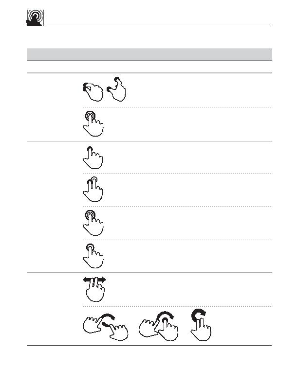

touch gesture
reference guide
spread
Adjust view
(zoom out)
Display commands
i
Supporting materials for this guide can be found online:
http://www.lukew.com/touch/
user action
gesture
description
NAVIGATING ACTIONS (continued)
Touch surface with two fingers and
move them apart
Rapidly touch surface twice with fingertip
press
Touch surface for extended period
of time
press and tap
Press surface with one finger and briefly
touch surface with second finger
two-finger drag
Move through list
Move to previous/next item in list
rotate
OR
OR
double tap
Rapidly touch surface twice with fingertip
double tap
Touch specific corner of surface with
fingertip
corner tap